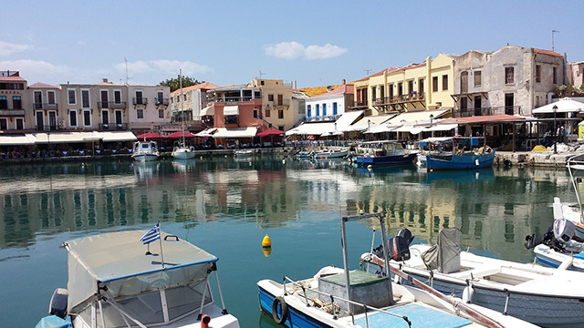
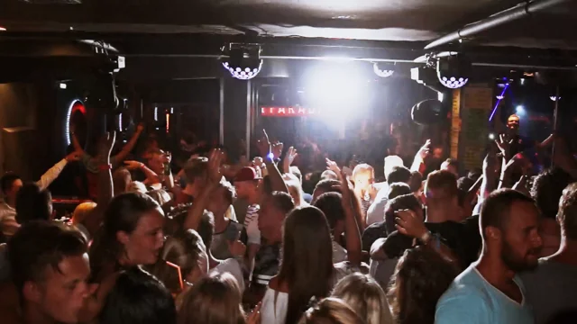
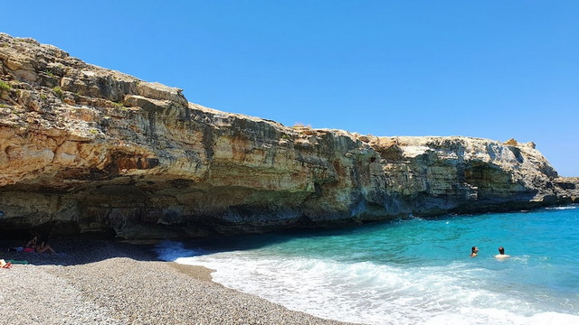
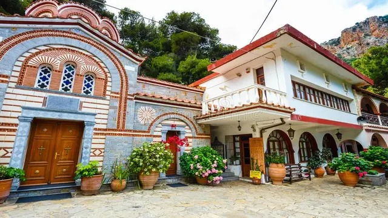
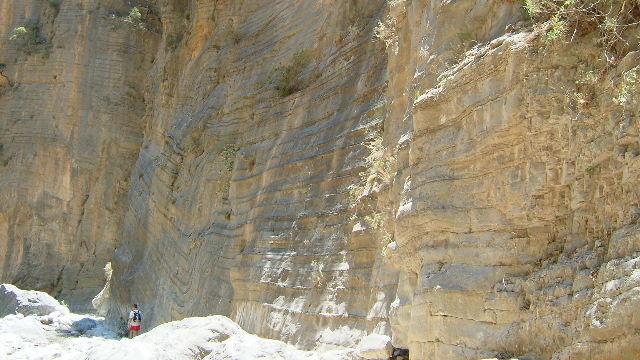
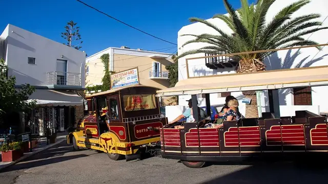

Ontdek de Betoverende Bezienswaardigheden van Kreta!
Boottochten
Ontdek de adembenemende en betoverende boottochten van Sisi Bay hier!
Ontdek hier de onvergetelijke boottochten van Sisi. Het is echt een hele mooie, maar ook leuke ervaring. Je vaart door het heldere water en ontdekt kleine eilandjes, en verborgen strandjes. Je kan tijdens de boottocht ook zwemmen en snorkelen. Met name de zonsondergang is echt prachtig.
De zon weerkaatst op het prachtige heldere water wat een mooi effect geeft. Tijdens de boottocht vaar je langs meerdere verborgen eilandjes waar je (op sommige) ook op kan lopen.
Onderweg kan je genieten van de heerlijke lokale gerechtjes. in Griekenland. Deze boottocht zal je reis zonder twijfel verrijken en een blijvende indruk achterlaten.
Nachtleven in Chersonisoss
Ontdek hier het nachtleven van Chersonissos, waar het elke avond feest is wat je nooit zult vergeten!
Het uitgaansleven in Chersonissos is onder de feestgangers een enorm spektakel. De avonden in Cherso zijn gevuld met luide muziek, alcohol en veel plezier. Het begint allemaal bij de ''barstreet'' waar veel mensen ''(in)drinken''.
Deze bars zijn de hele nacht open en perfect om je avond mee te beginnen. Later op de avond gaan de meeste mensen naar de grotere clubs van Chersonisoss. Denk bijvoorbeeld aan club sensation, club bio bio en nog veel meer! De muziek houd je de hele nacht bezig, er is geen moment om stil te staan.
Ook zijn er veel gezellige pubs en kroegen waar je met vrienden kan praten en nieuwe mensen kan leren kennen! Er zijn veel thema-avonden waarbij je je kan verkleden en gezellig met mensen kan dansen / nieuwe mensen kan leren kennen. Of je nu van dansen, cocktails, of gewoon gezelligheid houdt, hier vind je het allemaal.
Het uitgaan hier is een ervaring die je niet snel zult vergeten.
Stranden
Ontdek hier de mooie stranden van Kreta, waar je helder water en mooie landschappen kan bekijken voor een onvergetelijke ervaring!
De stranden van Kreta, Griekenland, zijn werkelijk prachtig. Met kristalhelder water, diverse landschappen variërend van uitgestrekte zandstranden tot afgelegen baaien, en een gastvrije sfeer, bieden ze de perfecte plek om te ontspannen en te genieten van de Egeïsche Zee. Sommige stranden bieden watersportmogelijkheden, terwijl andere ideaal zijn om gewoon te chillenonder de zon.
De zonsondergangen zijn magisch. Kreta's stranden zijn echt een hele mooie ervaring en ik kan niet wachten om nog meer van dit prachtige eiland te verkennen. Ik zou het zeker iedereen aanraden om de stranden te bezoeken!
Klooster van Agios Georgios
Ontdek hier het prachtige Agios Georgios Selinaris klooster, waar de geschiedenis en oudheid een betoverend gevoel geven!
Mijn bezoek aan het Klooster van Agios Georgios Selinaris was een bijzondere ervaring. Dit afgelegen klooster straalt een unieke sfeer uit, omgeven door prachtige natuurlijke landschappen. Binnenin wordt er vooral heiligheid benadrukt door iconen, kaarsen en wierook. Ik had het geluk om 2 monniken te ontmoeten, die me meer over de geschiedenis en betekenis van het klooster vertelden.
De binnenplaats zorgde voor rust. Mijn bezoek aan dit klooster was een onvergetelijke ervaring. Daarom raad ik iedereen aan om je kans te pakken en hiernaar toe te gaan.
Wandeling door de Samariakloof
Ontdek hier de epische Samariakloof op Kreta, waar je perfect kan wandelen in een pad naar ontdekking!
Mijn avontuurlijke wandeling door de Samariakloof op Kreta was een onvergetelijke ervaring. De kloof, met zijn hoge rotswanden en smalle paden, was adembenemend. Onderweg kwam ik langs wilde bloemen, smalle doorgangen en de ruïnes van het oude dorp Samaria. De afdaling was soms uitdagend, maar het uitzicht was spectaculair.
Uiteindelijk bereikte ik de prachtige Libische Zee, waar ik kon chillen en zwemmen. Deze wandeling zat vol bijzonderheden. Het is een ervaring die ik iedereen zou aanraden die Kreta bezoekt en op zoek is naar een onvergetelijk avontuur in de natuur.
Dorpsleven in Sisi
Ontdek hier het gezellige dorpsleven in Sisi, waarbij de bevolking, het heerlijke eten en de natuur samenkomen!
dorpsleven in Sisi, Kreta, is een bijzondere ervaring wat vooral bestaat uit Griekse gastvrijheid. De mooie straten en vriendelijke groeten van de lokale bevolking zorgen voor een fijn en blij gevoel . Het dorpsplein is levendig met leuke kraampjes en festivals, terwijl avonden worden afgesloten met mooie zonsondergangen boven de Egeïsche Zee.
Sisi heeft een rustig dorpsleven wat vooral draait om blijheid, vreugde en lekker eten. Ik raad iedereen aan om het dorpsleven in Sisi mee te maken en natuurlijk om mee te doen met de leuke activiteiten.